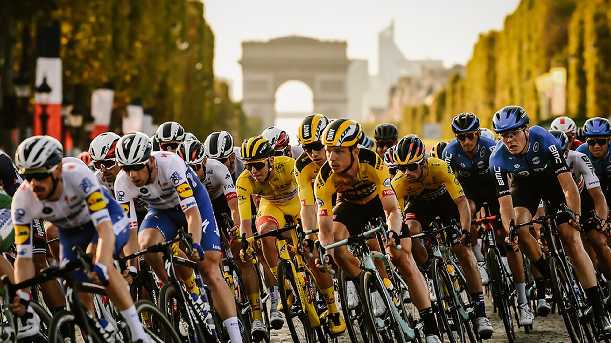
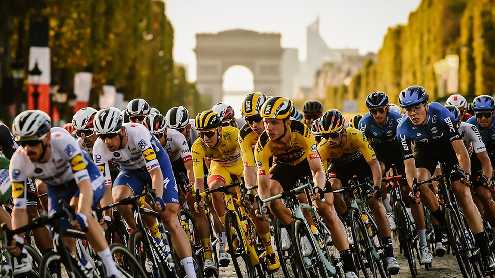

The race was first organized in 1903 to increase sales for the newspaper L'Auto and is currently run by the Amaury Sport Organisation. The race has been held annually since its first edition in 1903 except when it was stopped for the two World Wars.
Hows all started?
The race was first organized in 1903 to increase sales for the newspaper L'Auto and is currently run by the Amaury Sport Organisation. The race has been held annually since its first edition in 1903 except when it was stopped for the two World Wars.

 

Choose your favorite racer: